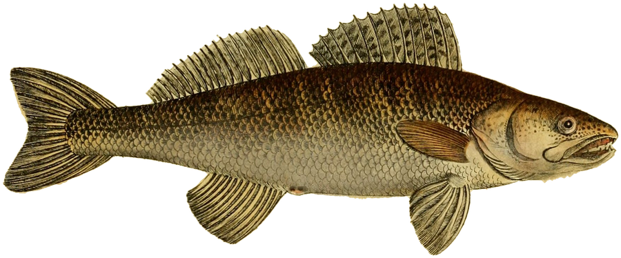

17:10
Club
3 amis · La Marne, Val-de-Marne (94)
L
Léa
Gardon
M
Malo
Sandre

I
Inès
Brochet
Dans le fil
Malo
a rangé un sandre
il y a 12 min
Léa
a rangé un gardon
il y a 2 h
Inès
a rangé un brochet
hier
Pescedex
Carte
Club